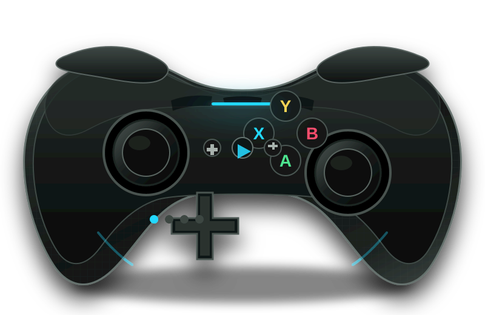

切换成本高于配对成功
玩家能学会配对，却无法记住每台设备的上次通道、布局和配置。产品需要把“去哪里玩”变成唯一选择，其余状态自动恢复。
把操作手感从一台设备带到下一台设备。一个跨 PC、主机与移动端的高阶竞技手柄方案，用平台身份、配置同步与可验证输入链路解决真正的跨端摩擦。
桌面研究覆盖官方旗舰与国产挑战者。用户研究分为已完成的公开信息归纳和待验证的一手研究方案，避免把假设包装成结论。
| 竞品 | 优势 | 公开平台与连接 | 可攻击点 | NEXUS 策略 |
|---|---|---|---|---|
| Xbox Elite Series 2 官方旗舰 |
可调张力摇杆、短行程扳机锁、机身 3 组配置、生态完整。 | Xbox / Windows / iOS / Android；Xbox Wireless、蓝牙、USB-C。 | 高级软件能力集中在 Xbox 与 Windows，跨生态后配置和状态不连续。 | 不拼单生态最强，拼跨生态连续性。 平台身份、账号配置、输入链路测试成为一条统一体验，而不是散落在不同软件中。 |
| DualSense Edge 体验旗舰 |
触觉反馈、自适应扳机、游戏内快捷调参和 PS5 原生能力。 | PS5 / Windows；蓝牙、USB-C。 | PC 高级反馈受有线与游戏支持限制，平台广度有限，价格高。 | |
| 8BitDo Ultimate 2 跨平台旗舰 |
TMR 摇杆、霍尔扳机、1000Hz、双扳机模式、充电底座。 | Windows / Android / SteamOS / Apple；2.4G、蓝牙、USB-C。 | 参数价值强，但连接模式、软件和平台布局仍需玩家自行建立规则。 | |
| GameSir G7 Pro 竞技参数 |
TMR 磁阻摇杆、双模式扳机、四振动马达、磁吸面盖、1000Hz。 | Xbox / PC / Mobile；Xbox 有线，PC 与移动无线。 | 电竞参数表达强，但跨设备身份与配置恢复仍弱。 |
玩家能学会配对，却无法记住每台设备的上次通道、布局和配置。产品需要把“去哪里玩”变成唯一选择，其余状态自动恢复。
官方软件和挑战者工具各自保存手感。账号同步、版本回滚和本地离线可用，才能让配置成为长期资产。
1000Hz 和 4ms 不是普通玩家能判断的体验。输入测试应该直接告诉玩家当前是竞技、稳定还是需要优化。
产品由平台身份层、配置身份层和可验证链路层组成。第一版明确完成无线平台边界，Xbox 采用有线兼容，避免用未完成的授权承诺换营销声量。
自动读取目标平台、上次通道和配置，玩家只确认一次，后续切换在 5 秒内完成。
机身 5 组快捷配置，账号保存跨平台个人配置。离线可用，冲突不自动覆盖。
TMR 摇杆、双模式扳机、1000Hz 目标与输入测试。低延迟被证明，不被口号代替。
真实问卷、深访、手板握持、定价与 SKU 决策。
无线、延迟、续航、模块、App 基础闭环。
认证样机、100 名种子用户、供应链冻结。
量产验证、包装、评测与首发模板。
原型不是视觉稿翻页，而是一个带状态的设备中心：切换平台会改变连接通道、配置、延迟、灯带；配对覆盖层会实际推进；调参会影响手柄模型；输入测试会产出可执行结论。
当前环境未安装 Axure RP；浏览器原型用于直接演示，Axure 指南用于还原原生工程。
PRD 覆盖连接边界、硬件规格、App 信息架构、关键状态、异常降级、埋点、验收和 44 周上市节奏，并附带 Axure 页面树与交互检查表。
需求、平台矩阵、硬件、软件、异常、埋点、实验、验收和风险。
打开 Markdown公开竞品矩阵、样本配额、访谈任务、关键假设与决策门槛。
打开研究文档画布、组件、全局变量、页面树、状态和演示路径。
打开还原指南